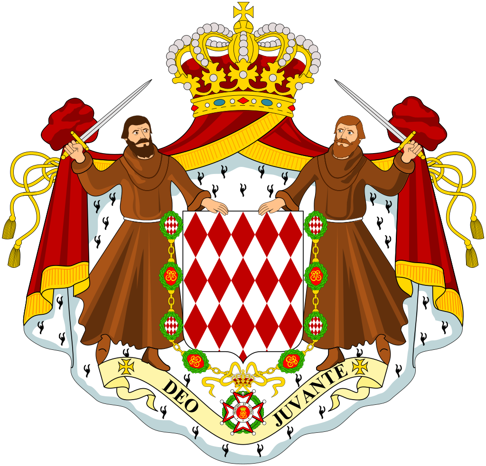
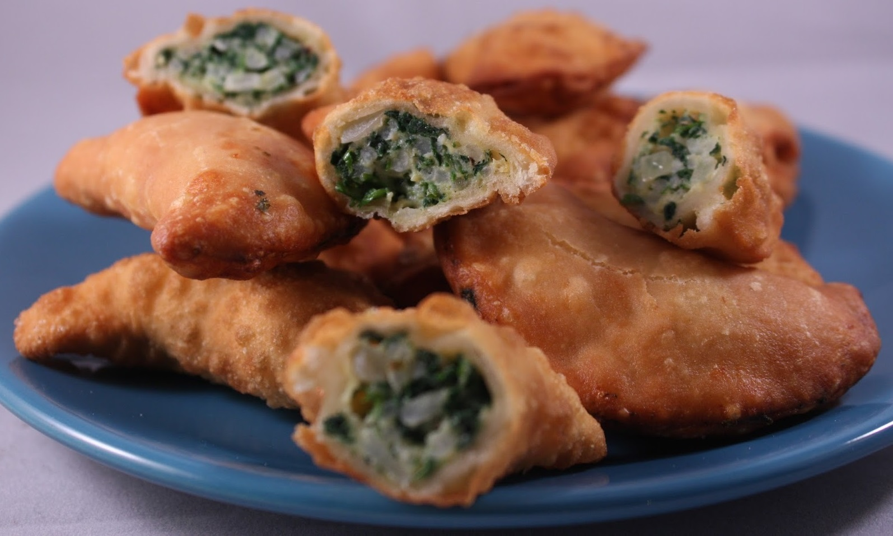

Monaco
Barbagiuan


A savory pastry with a spinach and cheese filling that originated from Monaco. It has since spread to Northern Italy and the French Riviera! Although it can be eaten on any day, it's typically eaten the most on November 19, the National Day of Monaco or The Sovereign Prince's Day.
Ingredients
- Plain Flour: 200g
- Salt: a dash
- Olive Oil: 50 mL
- Egg, beaten: 1
- Water: 50 mL
- Vegetable Oil, for deep frying
- Olive Oil: 15 mL
- Onion, finely chopped: 30 g
- Leek (white part only), finely chopped: 30 g
- Swiss Chard Leaves (green parts only), shredded and chopped: 2
- Fresh Spinach, chopped: 50 g
- Dried Oregano, crumbled: a pinch
- Ricotta Cheese: 50 g
- Parmesan Cheese, freshly grated: 30 g
- Egg White, beaten: 1
Pastry
Filling
Steps
- Sift the flour and salt into a bowl. Add the olive oil and half the egg white and blend with a fork. Reserve the rest of the egg for the filling.
- Add just enough water to bring the pastry together as a firm dough. Turn this out onto a lightly-floured surface and knead until smooth and elastic (about 5 minutes). Wrap in plastic wrap and chill in the fridge for 30 minutes.
- Heat the olive oil in a shallow pan over medium heat and add the onion and leek and fry until golden (about 5 minutes). Add the chard, spinach and oregano and fry until the chard is tender (about 10 minutes).
- Transfer the contents of the skillet to a bowl and then mix in the cheeses and the leftover egg from the pastry. Season with salt and pepper and set aside to cool.
- Roll the dough out on a lightly floured work surface to about 2mm thick. Use a floured 6cm round pastry cutter and cut into as many rounds as you can.
- Gather the scraps, re-roll out and cut again. You should end up with about 20 circles. Place 1 tsp of the filling in the centre of each pastry round and brush the edges with the egg white.
- Fold the dough over to form a semi-circle and press the edges with the ends of a fork to seal. As you complete each pastry, transfer to a baking tray lined with foil. At this stage, you can freeze the pasties and then thaw before cooking, or you can cook them right away.
- Pour vegetable oil into a deep pan (you need at least 4cm) and heat to fry. Working in batches, add the pasties to the oil and fry until brown and crisp (about 5 minutes).
- Transfer to a plate lined with kitchen towels using a slotted spoon.